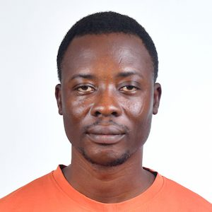
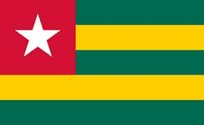

My name is Tiempo Sanwogou and I'm very excited to take this class with you. I'm from Togo, a french speaking country bordered with to Ghana. I'm married to a beautiful and wonderful wife named Lebenam and We have 3 children, including 2 daughters, Melina and Eliana, and a boy named Ivan. We recently lost our 4th child, whose pregnancy could not reach term. I had a privilege to serve a fulltime mission in Lagos Nigeria with succes from 2012 to 2014.
I'm a passionate of geopolitics and I love watching korean historical drama. I enjoy working in a team, meeting new people, and building relationships. I hope to have a great time with you throughout this course. Nice to meet you.
Tiempo Sanwogou
About Me

Lome, Togo

Nestled on West Africa's Gulf of Guinea, Togo is a slender sliver of a nation boasting a remarkable diversity of landscapes compressed into its narrow borders. From palm-fringed beaches along the coast, it stretches north through rolling hills and plateaus to the arid plains of the Sahel. Known for its vibrant markets, like the famed Akodessewa Fetish Market in the capital city of Lomé, Togo is a country rich in Voodoo culture and tradition, offering a compelling blend of ancient customs and modern African life